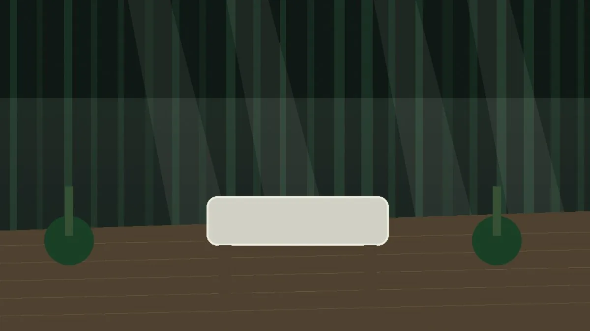

THE BUSINESS FIRST.
Medical information must feel credible and easy to understand without becoming cold, sterile or visually interchangeable with every private clinic website.

BUILD 002 / PORTFOLIO BUILDA private outpatient rehabilitation centre concept balancing clinical seriousness with calm, human care and a premium patient experience.
CURRENT STATE / ACTIVE BUILDMedical information must feel credible and easy to understand without becoming cold, sterile or visually interchangeable with every private clinic website.
Very dark forest green, warm ivory, natural wood and a Japanese-forest calm. The visual system is restrained, patient-first and intentionally different from LAUNCH CTRL itself.
Service architecture, patient journey, clear treatment flow, paediatric care, research/partnership space, multilingual readiness and room for future bookings, digital continuity and wellbeing services.
Romanian and English are planned as primary site languages, with content separated cleanly enough to support future localization.